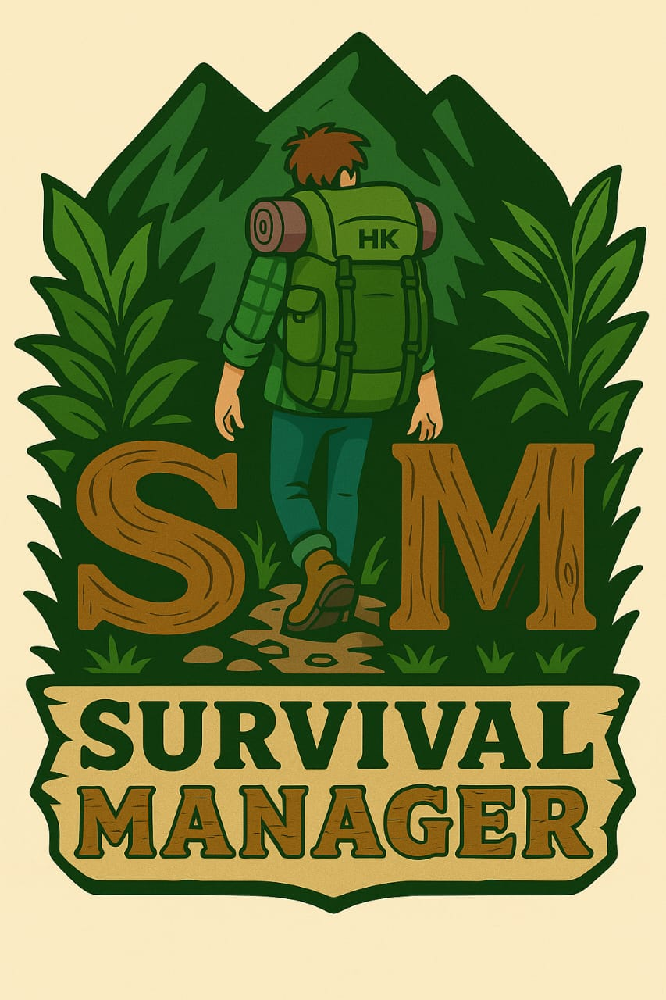

Gerenciamento de Estoque - Sobrevivencialismo
0| Nome | Tipo | Massa/Volume | Validade | Status (FIFO) | Ações |
|---|

Prepare-se para gerenciar seu estoque de forma eficiente, segura e 100% offline!
| Nome | Tipo | Massa/Volume | Validade | Status (FIFO) | Ações |
|---|
Os itens a seguir requerem atenção imediata de consumo (FIFO):
| Item Essencial | Porção / Pessoa | Grupo / Refeição | Refeições Aplicadas | Total Bruto | Margem | Embalagens a Comprar |
|---|
Observações Críticas:
A sobrevivência é, fundamentalmente, uma questão de perspectiva mental. Em crises severas, o espírito comanda o corpo. Casos históricos demonstram que indivíduos fisicamente saudáveis sucumbiram ao desespero por perda da vontade de viver, enquanto outros sob condições extremas resistiram guiados pela determinação.
Sem energia elétrica ou sinal GPS, a navegação depende de referências naturais e da geometria solar:
O isolamento térmico contra o solo e a perda de calor por condução são mais letais do que a falta de alimentos nos primeiros dias.
Um adulto sobrevive semanas sem comida, mas sucumbe em 3 a 5 dias sem água potável.
As três causas imediatas de óbito evitável em emergências são: obstrução das vias aéreas, hemorragia grave e choque hipovolêmico.
O maior risco de um depósito de emergência é a perda silenciosa de alimentos e insumos por vencimento desordenado.